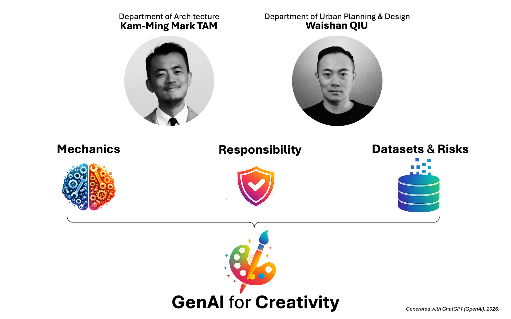

CCAI 9012 Course Online Documentation
GenAI Solutions to Global Challenges explores how artificial intelligence, and generative AI in particular, can be used carefully and creatively in architecture and urban design. The course introduces core ideas behind data, machine learning, and generative models, and focuses on how these systems behave in practice rather than in abstraction.
Teaching is organised around lectures, tutorials, and case studies, alongside a team-based course project. Students work with datasets, examine model behaviour, and test AI tools through hands-on exercises, while engaging directly with questions of bias, transparency, accountability, and social impact. Ethical and responsible use is treated as a practical design concern, not a theoretical add-on.
This document links the various course components, including weekly lecture materials, tutorial resources, readings, case study briefs, and project starter kits. Content will continue to evolve over the semester as tools, examples, and risks around AI change.
Your patience is appreciated as materials are refined and updated to reflect changes in AI practice. If you notice any issues or inconsistencies, please contact us at via [email].

Documentation
📅 Course Plan
View the complete course schedule with weekly topics, assignments, and activities.
View Schedule →📚 Reading Materials
Curated academic papers and resources organized by learning modules.
Read More →📦 Installation Guide
Set up your development environment with Anaconda and all required dependencies.
Get Started →🚀 Starter Kits
Explore five comprehensive modules for your AI projects, from GANs to bias detection.
View Kits →🛢️ Datasets Reference
Access 40+ datasets with direct download links for your projects.
Browse Datasets →